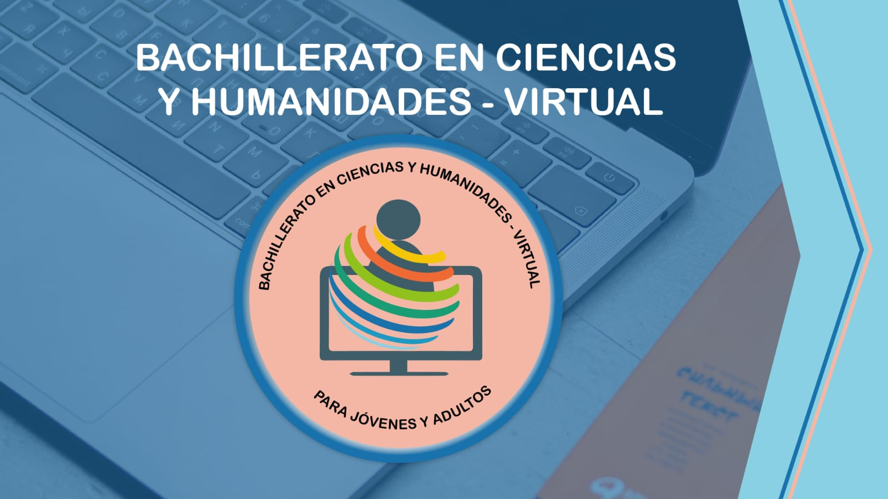
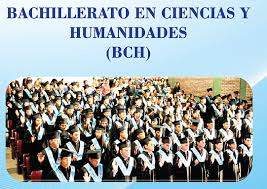
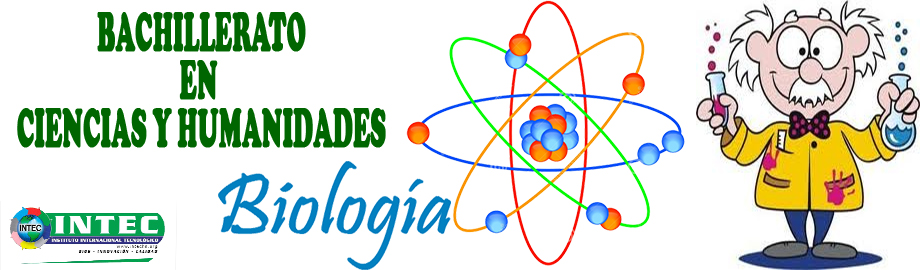

Instituto Hondureño de Educación por Radio
Ciencias y humanidades esta orientada a capacitar la estudiante en las areas de ciencias naturales, matematicas, quimica y fisica elemental 1.1 Que es materia de humanidades El area de humanidades se interesa por el estudio de ambitos relacionados con la cultura en general, tales como la historia, la filosofia, el arte, entre otros, siendo todos ellos productos caracteristicos del pensamiento humano. 1.2 Que significa bachiller en ciencias y humanidades ¿Que es el bachillerato acelerado ¿Que se estudia en el Bachillerato de Humanidades? Más 2 de las siguientes optativas: 6 ventajas de estudiar BCH ( ballicherato en ciencias y humanidades) 5 desventajas de estudiar BCH(bachillerato en ciencias y humanidades
Ciencias y Humanidades

El Bachillerato en Humanidades es un programa de formación universitaria creado en el año 2001 y cuyo centro de interés es el estudio de las Humanidades, el desarrollo de competencias genéricas y la orientación de sus alumnos para la continuación de estudios


Ventajas:
Desventajas
Bachillerato Técnico Profesional en Ciencias y Humanidades
Estructura de estudio por Ciclos
| Primer Ciclo | Segundo Ciclo | Tercer Ciclo |
| Formacion de fundamento | Formación Orientada | Formación Específica Práctica Profesional Trabajo Educativo Social |
| 2 Semestre | 1 Semestre | 3 Semestre |
Formación Específica
| Áreas Curriculares | Espacios Curriculares |
| CONTABILIDAD | Contabilidad I Contabilidad II Contabilidad de costos Contabilidad bancaria |
| FINANZAS | Matemáticas Financieras Administración Financiera I Administración financiera II |
| GESTIÓN Y SERVICIO AL CLIENTE |
Operaciones Tributarias Atención al cliente |
| LEGISLACIÓN | Legislación Mercantil |
| AUDITORIA | Auditoria |
| INFORMÁTICA | Informática contable |
| ECONOMIA | Economía |
| ADMINISTRACIÓN | Administracio General |
| Practica Profesional |
Distribución de la carga
y espacios curriculares
Primer Año
| I SEMESTRE | II SEMESTRE |
| Espacio Curricular | Espacio Curricular |
| Matemática I | Matemáticas II |
| Español I | Español II |
| Física I | Física II |
| Química I | Química II |
| Biología I | Biología II |
| Inglés I | Inglés II |
| Sociología | Historia de Honduras |
| Filosofía | Orientación Vocacional |
| Informática | Lenguaje Artístico |
| Psicologia | Educación Física y Deporte |
Segundo Año
| I SEMESTRE | II SEMESTRE |
| Espacio Curricular | Espacio Curricular |
| Matemática III Aplicada | Mercadotecnia |
| Lengua y Literatura | Organización del Trabajo |
| Inglés Técnico III | Proyectos y Presupuesto |
| Formación Específica: | Formación Específica |
| Contabilidad I | Matemática Financiera |
| Administración General | Contabilidad |
Tercer Año
| I SEMESTRE | II SEMESTRE |
| Formación Específica | Formación Específica |
| Formación Específica | Formación Específica |
| Economía | Administración Financiera II |
| Legislación Mercantil | Contabilidad de Costos |
| Operaciones Tributarias | Auditoría |
| Contabilidad Bancaria | Servicio al Cliente |
| Administración Financiera I | |
| Informática Contable | Practica Profesional |
| Trabajo Educativo Social |
(c) Derechos reservados Diseñado por Grupo 9 proyecto diseño web, 12v informática sección 2, -2021